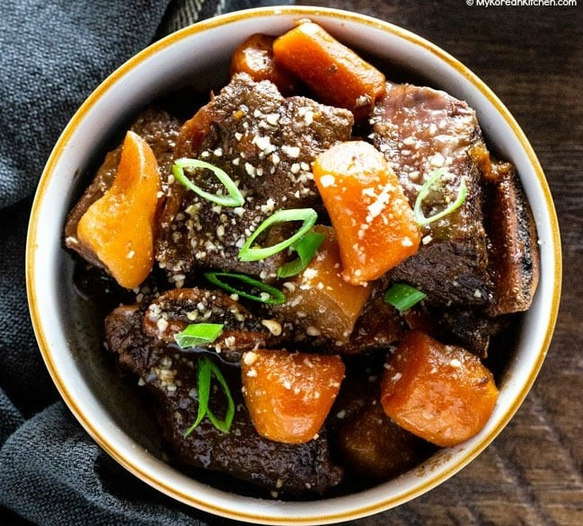

Instant Pot Korean Short Ribs
MAIN
- 1.5 kg bone-in beef short ribs (3.3 pounds)
250 g carrots (8.8 ounces), peeled & cut in medium size chunks
200 g Korean radish (7 ounces), (or daikon radish), optional, cut in medium size chunks
SAUCE
- 1/2 cup water
1 red apple (or nashi / asian pear), (170 g / 6 ounces), cored & chopped
1/2 onion (60 g / 2 ounces), peeled & chopped
6 Tbsp soy sauce , regular
2 Tbsp brown sugar
2 Tbsp honey
2 Tbsp rice wine (mirin)
1 Tbsp minced garlic
1 tsp sesame oil
5 whole black peppercorns
Directions
- Fill a large pot with some water (about 2/3 of the pot) and bring it to boil. While the water is boiling, soak the ribs in cold water. Once the water in the pot is rapidly boiling, transfer the short ribs into the pot and boil them over medium high heat for 6 to 8 minutes.
- Drain the water away and rinse the ribs in cold running water. Cut off any excess fat (with a pair of scissors) from the ribs. Place the short ribs in the instant pot.
- 2.Meanwhile, blend the sauce ingredients in a mixer or food processor until smooth.
- 3.Pour the sauce over the short ribs. Put the lid on and make sure the vent is in the sealed position. Set the pot to pressure cook on high for 35 minutes. After the pressure cook cycle is complete, allow the pressure to naturally release for 15 mins (the vent is still closed). Then do quick release and wait until the quick release cycle is complete. Be careful of any remaining steam. Unlock and remove the lid.
- Using a slotted spoon, transfer the meat to a large bowl then cover and set aside. Cancel the keep warm mode. (Which would have activated automatically when it finished pressure cooking.)
- 4.Add the prepared vegetables into the pot. Set the pot to sauté (normal) for 20 minutes and cook the vegetables until soft. Meanwhile, the sauce will turn thick and glazy.
- Set the pot to off and transfer the vegetables and the sauce to the meat, then toss to coat. (If desired, you can separate the oil from the sauce as explained in the cooking tips above). Garnish with toasted sesame seeds.
- Serve the ribs with steamed rice and other Korean side dishes. Steamed vegetables such as broccoli go well too.
Go Back!